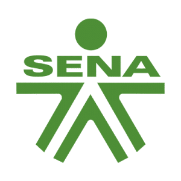
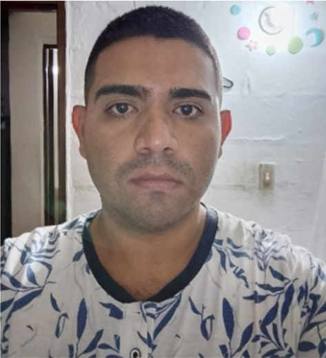
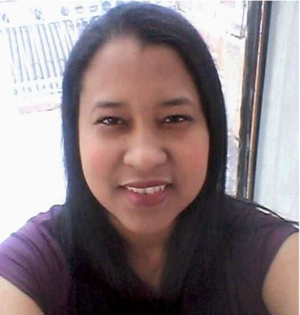
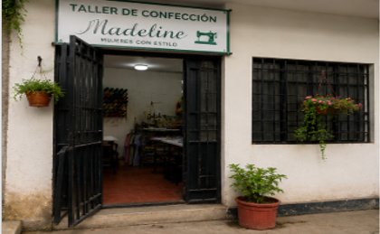
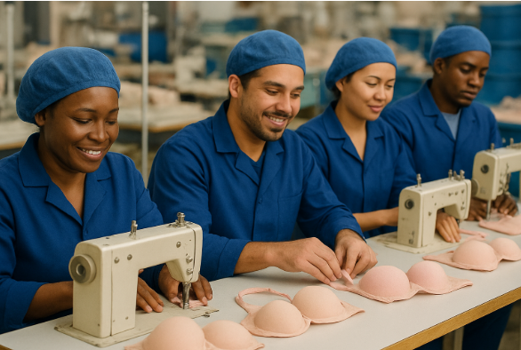
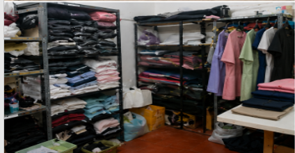
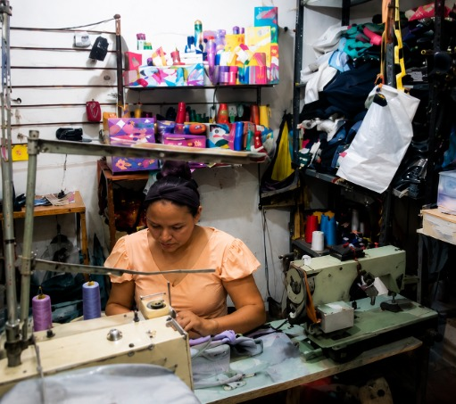

Optimización, eficiencia y gestión estratégica aplicada al taller de confección Madeline Mujeres con Estilo.
Iniciar Presentación
Juan David Arias
Denia Campo BadilloCentro de Comercio y Servicios · Red de Conocimiento en Logística y Gestión de la Producción
Análisis del entorno, impacto socioeconómico y necesidad de optimización
Visualización del espacio de trabajo, áreas de almacenamiento y maquinaria de Madeline




Estructura causa-efecto identificada en el sistema productivo actual
Ciclo de trabajo propuesto para el desarrollo del proyecto
Cinco dimensiones que sustentan la propuesta de optimización
Proyecto de optimización de procesos textiles y de confección
El proyecto fortalece la comunidad impulsando empleo y nuevas iniciativas de emprendimiento local.
Una mayor eficiencia logística y operativa incrementa la productividad y reduce costos, impulsando la competitividad.
La implementación de tecnología supera barreras y mejora la eficiencia en toda la cadena de valor.
La optimización de procesos se alinea con la planificación estratégica y las mejores prácticas de gestión empresarial.
Una cultura organizacional sólida y adaptable es clave para el éxito en el dinámico mercado de la moda.
Investigaciones previas que sustentan la necesidad de optimizar procesos logísticos
Este antecedente se enfoca en mejorar el proceso logístico de Tortas My Letty, identificando las principales falencias de su cadena de suministro.
La tesis evidencia deficiencias en la gestión de la logística, principalmente en almacenamiento, cadena de frío, control de inventarios y uso de tecnología.
Estas falencias generan mayores costos, baja productividad, insatisfacción de clientes y pérdida de oportunidades de venta, demostrando la necesidad de optimizar y tecnificar los procesos logísticos.
Este antecedente se enfoca en la mejora para el proceso logístico de despacho de la empresa Agroindustrias del Cauca.
Al realizar el análisis de la empresa se evidencian procesos poco tecnificados que generan desgaste físico en los trabajadores, aumento de incapacidades y horas extras.
También se encuentran fallas en el alistamiento de tractocamiones, ocasionando devoluciones, reprocesos y retrasos en los despachos.
Conceptos clave en logística y gestión
Planifica, ejecuta y controla el flujo y almacenamiento de bienes, servicios e información, desde el origen hasta el consumo, para satisfacer al cliente.
Incluye a todas las partes involucradas, directa o indirectamente, para satisfacer la petición de un cliente.
Coordina la capacidad funcional en una operación integrada para atender al cliente, sincronizando operaciones con clientes y proveedores.
Método para descubrir las mejores prácticas con el fin de dirigir y mejorar procesos clave del negocio.
Análisis profesional que interpreta los síntomas de una situación para comprenderla y proponer mejoras.
Fuentes teóricas que sustentan el desarrollo del proyecto
Normativa colombiana aplicable al proyecto y a la operación del taller
Garantiza la libertad económica y la iniciativa privada, respaldando la creación y desarrollo de emprendimientos dentro del marco de la ley.
Protege los derechos de los consumidores, promoviendo productos y servicios de calidad y una adecuada atención al cliente.
Establece las reglas para el manejo y protección de la información personal de clientes y demás usuarios.
Regula aspectos relacionados con la seguridad y salud en el trabajo, fundamentales para proteger a los colaboradores del taller.
Establece lineamientos para el establecimiento de corredores logísticos y la articulación de actores que convergen sobre ellos, para mejorar la eficiencia logística.
Establece normas generales sobre aranceles, tarifas y demás disposiciones relacionadas con el régimen de aduanas y el comercio exterior.
Garantiza la seguridad de la cadena logística y previene delitos trasnacionales, adoptando buenas prácticas y gestión de riesgos en los procesos.
Actores que se benefician directamente de la propuesta de optimización
Dimensiones de impacto esperadas con la implementación del plan operativo
Aspectos que orientan el desarrollo metodológico del proyecto
| Aspecto | ¿Cuál? | ¿Por qué? |
|---|---|---|
| Enfoque del Estudio | Cuantitativo | Permite transformar el trabajo manual en una operación organizada y rentable, permitiendo medir la calidad y cantidad de lo producido. |
| Tipo de Investigación | Descriptiva | "Retratar" la realidad para luego tomar decisiones de mejora basadas en datos concretos. |
| Población | Operarios del taller | Constituyen el factor productivo directo y el grupo humano que transforma la materia prima en productos terminados. |
| Técnica del Muestreo | No probabilístico por conveniencia | Se basa en el criterio experto, la conveniencia y la necesidad de agilidad. Se seleccionan piezas específicas. |
| Muestra | 2 personas | Trabajar con una muestra pequeña maximiza la eficiencia y reduce el desperdicio en talleres con capacidad limitada. |
| Instrumento de Recolección | Encuesta estructurada | Permite obtener datos rápidos, estandarizados y comparables (como tiempos de producción o fallos comunes) mediante preguntas cerradas. |
Ficha resumen del ejercicio de recolección realizado en el taller Madeline
Aspectos positivos, oportunidades de mejora y resultados de la encuesta de satisfacción
Fabrican fajas postoperatorias (marca propia) además de maquila de prendas.
Garantiza prendas de mayor precisión y calidad.
Operaria líder con conocimiento en telas e insumos para seleccionar y recibir materiales de calidad.
Genera empleo para madres cabeza de hogar.
Mejorar distribución, almacenamiento y flujo de trabajo.
Mantenimiento preventivo e inversión en herramientas e iluminación.
Control de inventario, gestión de moldes, planificación y anticipos.
Silla ergonómica, pausas activas y ventilación adecuada.
Mejorar acabados y revisión final de las prendas.
Lo que más les gustó: la calidad de las prendas y el buen servicio.
¿Cómo podríamos mejorar? fabricar más tipos de prendas con más diseños.
Metas y propósitos fundamentales del plan operativo logístico — Taller de Costura Madeline Mujeres con Estilo
Confeccionar prendas con altos estándares de calidad.
Entregar los pedidos en el tiempo acordado.
Fidelizar a los clientes mediante un excelente servicio.
Fortalecer el crecimiento y posicionamiento de la marca.
Innovar continuamente en diseños y procesos de confección.
Análisis interno y externo del taller de confección
Plan de acción para las oportunidades de mejora identificadas en el diagnóstico del taller
| Qué | Por qué | Dónde | Cuándo | Quién | Cómo | Cuánto |
|---|---|---|---|---|---|---|
| Reorganizar el espacio de trabajo | Reduce tiempos muertos y mejora el flujo de materiales | Área de corte, costura y bodega | Mes 1 | Propietaria y operaria líder | Aplicando la metodología 5S por zonas de trabajo | Bajo — solo mano de obra propia |
| Controlar el inventario de insumos | Evita faltantes de materia prima y pérdidas por mal manejo | Bodega de insumos | Mes 1 - 2 | Operaria líder | Con la app móvil de inventarios y registro de entradas/salidas | Bajo — herramienta gratuita |
| Dar mantenimiento preventivo a las máquinas | Evita fallas, retrasos y reprocesos en producción | Puestos de costura | Cada 2 meses | Técnico externo | Programando revisiones periódicas y limpieza de máquinas | Medio — según cotización del técnico |
| Mejorar la ergonomía y salud laboral | Reduce el desgaste físico y aumenta la productividad | Puestos de trabajo | Mes 2 | Propietaria | Con silla ergonómica, pausas activas y mejor ventilación | Medio — inversión puntual |
| Fortalecer el control de calidad | Garantiza el acabado y la revisión final de las prendas | Área de acabados | Mes 2 - 3 | Operaria líder | Implementando el formato de control (FPR) antes del despacho | Bajo — formato interno |
Los nueve bloques que describen la propuesta de valor y el modelo de negocio de Madeline
Herramientas y acciones aplicadas para poner en marcha el plan de mejora del taller
| Propuesta | Alcance | Plazo de implementación |
|---|---|---|
| Control digital de inventarios | Registro de insumos, existencias y niveles mínimos | Mes 1 |
| Organización 5S del taller | Distribución de áreas de corte, costura y bodega | Mes 1 - 2 |
| Mantenimiento preventivo | Revisión periódica de máquinas de costura | Cada 2 meses |
| Control de calidad (FPR) | Revisión final de prendas antes del despacho | Mes 2 - 3 |
GA4-260102013-AA1-EV01 · Plan proyectado a seis meses según las necesidades reales identificadas en el taller
Principales aprendizajes obtenidos durante el desarrollo del proyecto
Madeline cuenta con personal experimentado, conocimiento técnico y buena calidad en sus prendas, además de contribuir a la generación de empleo.
Se identificaron oportunidades de mejora en la organización del espacio, control de inventarios, mantenimiento, planificación y ergonomía.
Los clientes presentan una percepción positiva del servicio, destacando la calidad de las prendas, el cumplimiento en las entregas y la atención recibida.
La elaboración de fajas postoperatorias como marca propia representa una oportunidad para diversificar los ingresos y fortalecer la rentabilidad del taller.
Las propuestas planteadas permitirán optimizar recursos, reducir reprocesos y mejorar la productividad, la logística y la competitividad de Madeline Mujeres con Estilo.
Acciones sugeridas para mantener y fortalecer las mejoras propuestas
Implementar el control de inventario mediante una herramienta digital sencilla para registrar entradas, salidas y existencias de materiales.
Mantener la organización 5S en las áreas de trabajo para mejorar la distribución, reducir tiempos de búsqueda y facilitar el flujo de producción.
Realizar mantenimiento preventivo periódico a las máquinas para evitar fallas, retrasos y costos inesperados.
Fortalecer el control de calidad mediante la implementación del FPR, con el fin de detectar errores durante el proceso de confección y garantizar la calidad de las prendas antes del despacho.
Este proyecto nos permitió comprender que mejorar un emprendimiento no siempre requiere grandes inversiones, sino identificar oportunidades y aprovechar mejor los recursos disponibles.
Las mejoras propuestas en inventario, organización, mantenimiento y calidad permitirán trabajar de manera más eficiente y organizada.
Finalmente, aprendimos que la mejora continua requiere compromiso, seguimiento y disposición al cambio para lograr que el taller pueda crecer y ser más competitivo.